```{r}
2+2
```[1] 4Este ejercicio funcionará como un breve tutorial de R, Rstudio y quarto. Más abajo, encontrarán links útiles para explorar por su propia cuenta detalles que no cubriremos en este espacio. Adicionalmente, realizaremos algunos ejercicios de procesamiento y analisis descriptivo de datos. Este ejercisio esta diseñado para estudiantes del curso soc3070, que ya tienen algo de experiencia con R y/o desean realizar el cambio de stata o spss a R. Por múltiples razones, alentamos el uso del lenguaje R y la infinidad de librerías disponibles para el procesamiento de datos y el análisis estadístico, especialmente la familia de librerías Tidyverse.

R es un lenguaje de programación y un entorno para análisis estadístico y gráfico. RStudio es un entorno de desarrollo integrado (IDE) diseñado específicamente para R, que facilita enormemente el trabajo con este lenguaje.
Quarto es una evolución multilingüe de RMarkdown, diseñada para la próxima generación de publicación técnica y científica. Quarto permite combinar código, resultados y texto narrativo en un solo documento, lo que facilita la creación de informes, presentaciones y páginas web dinámicas e interactivas. Al igual que RMarkdown, Quarto usa Knitr para ejecutar código R y, por lo tanto, puede procesar la mayoría de los archivos Rmd existentes sin modificaciones.
Trabajaremos con RScripts (archivos .R), en un arhivo Quarto (archivos .qmd). Pueden encontrar más información en este link
La mayoría del código utulizado en los ejemplos incluirá funciones de la familia de librerías Tidyverse. Más información acá
R y Rstudio lo puedes instalar siguiendo los instrucciones en este link
Ventajas de Quarto:
Para comenzar con Quarto:
R y RStudioRStudio, crea un nuevo archivo Quarto (File > New File > Quarto Document)Markdown y bloques de código RAlgunos textos que pueden ser de utilidad.
.qmd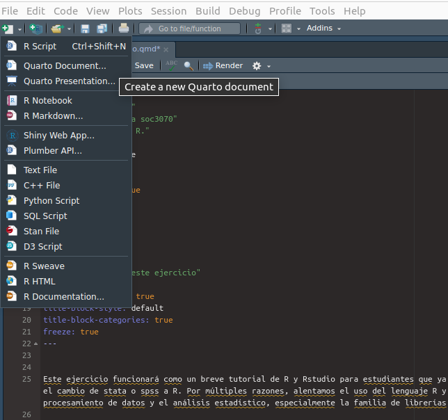
chunck de códigoCon la combinación de teclas ctrl + alt + i se inserta un chunck de código. Pueden formatear en {} el tipo de lenguaje que usaran dentro de él. Una de las ventajas de trabajar con quarto o Rmarkdown es que podemos usar distintos lenguajes en un mismo documento.
```{r}
2+2
```[1] 4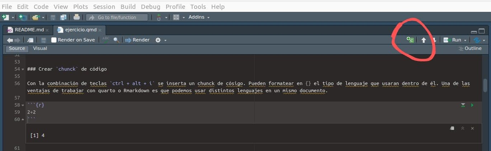
Imagina que estás construyendo una casa de datos: R base sería los cimientos, las paredes y el techo. Es la estructura fundamental sobre la que se construye todo lo demás.
R base es el conjunto de funciones y operadores que vienen pre-instalados con R. Es el “kit de herramientas” básico que recibes al instalar R por primera vez.
R base fue creado por Ross Ihaka y Robert Gentleman en 1993. ¡Su nombre “R” viene de las iniciales de sus creadores!
R base maneja varios tipos de datos fundamentales:
```{r}
# Numeric (números)
numero <- 42.5
print(numero)
# Integer (enteros)
entero <- 42L # La 'L' indica que es un entero
print(entero)
# Character (texto)
texto <- "Hola, mundo!"
print(texto)
# Logical (booleanos)
logico <- TRUE
print(logico)
```[1] 42.5
[1] 42
[1] "Hola, mundo!"
[1] TRUER base ofrece estructuras de datos versátiles:
```{r}
# Vector
vector <- c(1, 2, 3, 4, 5)
print(vector)
# Matriz
matriz <- matrix(1:9, nrow = 3, ncol = 3)
print(matriz)
# Lista
lista <- list(nombre = "Juan", edad = 30, notas = c(90, 85, 88))
print(lista)
# Data frame
df <- data.frame(
nombre = c("Ana", "Bob", "Carlos"),
edad = c(25, 30, 35),
ciudad = c("Madrid", "Barcelona", "Sevilla")
)
print(df)
```[1] 1 2 3 4 5
[,1] [,2] [,3]
[1,] 1 4 7
[2,] 2 5 8
[3,] 3 6 9
$nombre
[1] "Juan"
$edad
[1] 30
$notas
[1] 90 85 88
nombre edad ciudad
1 Ana 25 Madrid
2 Bob 30 Barcelona
3 Carlos 35 SevillaR base permite realizar operaciones matemáticas y lógicas:
```{r}
# Aritméticas
suma <- 5 + 3
resta <- 10 - 4
multiplicacion <- 6 * 7
division <- 20 / 5
# Comparaciones
mayor_que <- 10 > 5
igual_a <- 7 == 7
```R base incluye estructuras para controlar el flujo de ejecución:
```{r}
# If-else
x <- 10
if (x > 5) {
print("x es mayor que 5")
} else {
print("x es menor o igual a 5")
}
# For loop
for (i in 1:5) {
print(paste("Iteración", i))
}
# While loop
contador <- 1
while (contador <= 3) {
print(paste("Contando:", contador))
contador <- contador + 1
}
```[1] "x es mayor que 5"
[1] "Iteración 1"
[1] "Iteración 2"
[1] "Iteración 3"
[1] "Iteración 4"
[1] "Iteración 5"
[1] "Contando: 1"
[1] "Contando: 2"
[1] "Contando: 3"Las funciones son bloques de código reutilizables:
```{r}
# Definir una función
saludar <- function(nombre) {
return(paste("¡Hola,", nombre, "!"))
}
# Usar la función
mensaje <- saludar("María")
print(mensaje)
```[1] "¡Hola, María !"Imagina que R base es como una cocina tradicional bien equipada. Tiene todos los utensilios básicos que necesitas para cocinar: ollas, sartenes, cuchillos, etc. Puedes preparar prácticamente cualquier plato con estas herramientas.
Tidyverse, por otro lado, es como una cocina moderna con electrodomésticos especializados. Tiene procesadores de alimentos, licuadoras de alta potencia, y otros gadgets que hacen ciertas tareas más rápidas y eficientes.
Ambos enfoques tienen su lugar: - R base te da un control preciso y una comprensión profunda de lo que estás haciendo. - Tidyverse ofrece herramientas optimizadas para tareas comunes de análisis de datos, a menudo con una sintaxis más intuitiva.
Dominar R base te dará una base sólida para entender cómo funciona R en su núcleo. Esto te ayudará enormemente cuando uses paquetes más avanzados o cuando necesites depurar código complejo.
Tidyverse (sintaxis)Tidyverse es un conjunto coherente de paquetes de R diseñados para ciencia de datos. Estos paquetes comparten una filosofía de diseño y gramática común, lo que facilita su aprendizaje y uso conjunto. Tidyverse está diseñado para hacer que el análisis de datos sea más eficiente, coherente y fácil de comunicar.
TidyverseVamos a crear un ejemplo más completo que muestre cómo diferentes paquetes de Tidyverse trabajan juntos:
Primero, cargamos Tidyverse y creamos nuestro conjunto de datos de ejemplo:
```{r}
#| warning: false
#| message: false
# Cargar Tidyverse
library(tidyverse)
# Crear un conjunto de datos de ejemplo
set.seed(123)
data <- tibble(
id = 1:100,
group = sample(c("A", "B", "C"), 100, replace = TRUE),
value = rnorm(100),
category = sample(c("Alto", "Medio", "Bajo"), 100, replace = TRUE),
date = sample(seq(as.Date('2023-01-01'), as.Date('2023-12-31'), by="day"), 100, replace = TRUE)
)
# Mostrar las primeras filas de los datos
head(data)
```# A tibble: 6 × 5
id group value category date
<int> <chr> <dbl> <chr> <date>
1 1 C -0.333 Bajo 2023-12-24
2 2 C -1.02 Alto 2023-06-19
3 3 C -1.07 Medio 2023-04-06
4 4 B 0.304 Alto 2023-01-26
5 5 C 0.448 Medio 2023-08-18
6 6 B 0.0530 Medio 2023-05-28Ahora, vamos a procesar los datos utilizando funciones de dplyr:
```{r}
# Manipular datos con dplyr
data_processed <- data %>%
group_by(group, category) %>%
summarise(
mean_value = mean(value),
sd_value = sd(value),
count = n()
) %>%
ungroup() %>%
mutate(proportion = count / sum(count))
# Mostrar los resultados procesados
print(data_processed)
```# A tibble: 9 × 6
group category mean_value sd_value count proportion
<chr> <chr> <dbl> <dbl> <int> <dbl>
1 A Alto -0.230 1.03 14 0.14
2 A Bajo 0.00118 0.832 11 0.11
3 A Medio -0.444 0.825 8 0.08
4 B Alto 0.383 1.09 14 0.14
5 B Bajo -0.0496 1.02 8 0.08
6 B Medio 0.231 0.769 10 0.1
7 C Alto -0.396 1.06 13 0.13
8 C Bajo 0.0710 0.914 12 0.12
9 C Medio -0.241 0.898 10 0.1 Ahora, vamos a crear varias visualizaciones utilizando ggplot2:
```{r}
# Gráfico de barras con barras de error
ggplot(data_processed, aes(x = group, y = mean_value, fill = category)) +
geom_col(position = "dodge") +
geom_errorbar(aes(ymin = mean_value - sd_value,
ymax = mean_value + sd_value),
position = position_dodge(0.9), width = 0.25) +
scale_fill_brewer(palette = "Set2") +
labs(title = "Valor medio por grupo y categoría",
x = "Grupo", y = "Valor medio",
fill = "Categoría") +
theme_minimal() +
theme(legend.position = "bottom")
```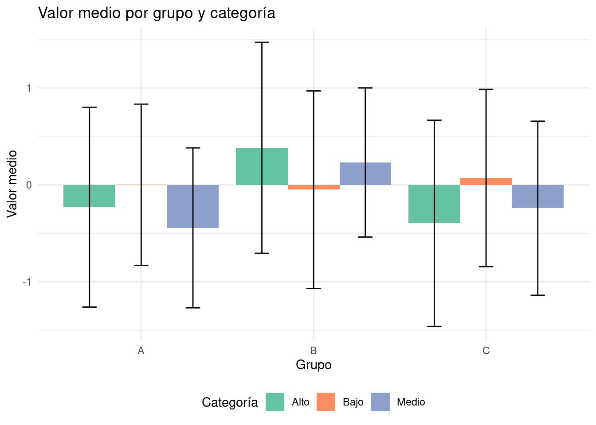
```{r}
# Cargar las librerías necesarias
library(lubridate) # Para manejo de fechas
# Preparación de datos
# Asumimos que 'data' ya está cargado y tiene las columnas: date, value, group, category
# Agregar una columna de mes a los datos originales
data <- data %>%
mutate(month = floor_date(date, "month"))
# floor_date() redondea las fechas al inicio del mes
# Calcular promedios mensuales
monthly_data <- data %>%
group_by(month, group, category) %>%
# Agrupar por mes, grupo y categoría
summarise(avg_value = mean(value, na.rm = TRUE), .groups = 'drop')
# Calcular el promedio de 'value', ignorando NA
# .groups = 'drop' elimina la agrupación después de summarise
# Crear el gráfico mejorado
ggplot(monthly_data, aes(x = month, y = avg_value, color = group)) +
# Definir los datos y mapeos estéticos básicos
geom_line(size = 1) +
# Añadir líneas para mostrar tendencias
geom_point(size = 2) +
# Añadir puntos para mostrar valores específicos
facet_wrap(~category, scales = "free_y", nrow = 3) +
# Crear subgráficos por categoría, permitiendo escalas y libres en y
scale_color_brewer(palette = "Set2") +
# Usar una paleta de colores predefinida de ColorBrewer
scale_x_date(date_breaks = "2 months", date_labels = "%b %Y") +
# Formatear el eje x para mostrar fechas cada 2 meses
labs(title = "Tendencia de valores promedio mensuales por grupo y categoría",
x = "Mes",
y = "Valor promedio",
color = "Grupo") +
# Añadir títulos y etiquetas
theme_minimal() +
# Usar un tema minimalista como base
theme(
legend.position = "bottom",
# Colocar la leyenda en la parte inferior
axis.text.x = element_text(angle = 45, hjust = 1),
# Rotar las etiquetas del eje x para mejor lectura
panel.grid.minor = element_blank(),
# Eliminar las líneas de cuadrícula menores
strip.background = element_rect(fill = "lightgray", color = NA),
# Personalizar el fondo de las etiquetas de facetas
strip.text = element_text(face = "bold", size = 10)
# Personalizar el texto de las etiquetas de facetas
)
# Para guardar el gráfico, descomenta la siguiente línea:
# ggsave("tendencia_valores_mensuales.png", width = 10, height = 8, dpi = 300)
```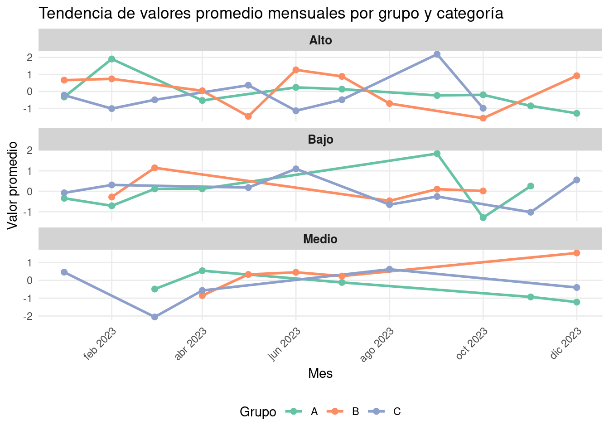
Ahora, vamos a transformar nuestros datos de formato largo a ancho:
```{r}
# Transformar datos con tidyr
data_wide <- data_processed %>%
select(group, category, mean_value) %>%
pivot_wider(names_from = category, values_from = mean_value)
# Mostrar los datos en formato ancho
print(data_wide)
```# A tibble: 3 × 4
group Alto Bajo Medio
<chr> <dbl> <dbl> <dbl>
1 A -0.230 0.00118 -0.444
2 B 0.383 -0.0496 0.231
3 C -0.396 0.0710 -0.241Vamos a realizar un análisis adicional utilizando dplyr y luego visualizarlo:
```{r}
# Calcular estadísticas mensuales
monthly_stats <- data %>%
mutate(month = floor_date(date, "month")) %>%
group_by(month, group) %>%
summarise(
mean_value = mean(value),
median_value = median(value),
n = n()
) %>%
ungroup()
# Mostrar las estadísticas mensuales
print(monthly_stats)
# Visualizar las estadísticas mensuales
ggplot(monthly_stats, aes(x = month, y = mean_value, color = group)) +
geom_line() +
geom_point() +
labs(title = "Tendencia mensual por grupo",
x = "Mes", y = "Valor medio") +
theme_minimal() +
theme(legend.position = "bottom")
```# A tibble: 33 × 5
month group mean_value median_value n
<date> <chr> <dbl> <dbl> <int>
1 2023-01-01 A -0.337 -0.326 3
2 2023-01-01 B 0.665 0.665 2
3 2023-01-01 C 0.0779 0.190 6
4 2023-02-01 A 0.599 0.599 2
5 2023-02-01 B 0.230 0.230 2
6 2023-02-01 C -0.129 -0.372 3
7 2023-03-01 A -0.186 -0.186 2
8 2023-03-01 B 1.15 1.15 1
9 2023-03-01 C -1.27 -1.27 2
10 2023-04-01 A 0.0619 -0.0249 8
# ℹ 23 more rows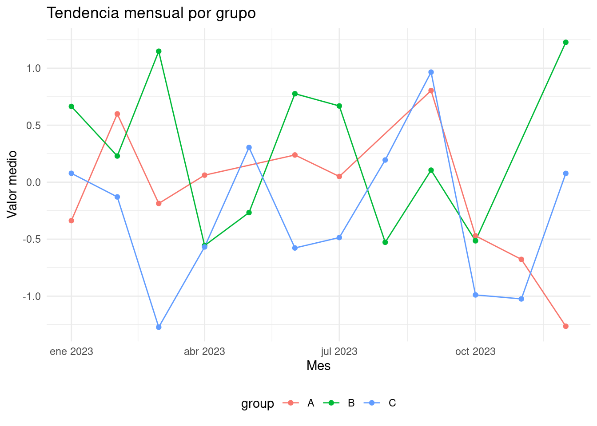
Finalmente, vamos a demostrar algunas operaciones con strings:
```{r}
# Crear un vector de strings
strings <- c("manzana", "banana", "cereza")
# Aplicar funciones de stringr
upper_strings <- str_to_upper(strings)
contains_ana <- str_detect(strings, "ana")
replaced_strings <- str_replace(strings, "a", "X")
# Mostrar los resultados
tibble(
original = strings,
mayúsculas = upper_strings,
contiene_ana = contains_ana,
reemplazado = replaced_strings
)
```# A tibble: 3 × 4
original mayúsculas contiene_ana reemplazado
<chr> <chr> <lgl> <chr>
1 manzana MANZANA TRUE mXnzana
2 banana BANANA TRUE bXnana
3 cereza CEREZA FALSE cerezX Este ejemplo muestra cómo utilizar varios paquetes de Tidyverse juntos para realizar un análisis de datos completo, desde la creación y manipulación de datos hasta la visualización y transformación.
El operador de tubería %>% fue introducido por el paquete magrittr y es adoptado por Tidyverse (y otros paquetes populares como igraph). Es una herramienta fundamental que usaremos frecuentemente en este curso.
La idea detrás de las tuberías es, en esencia, muy simple:
f(g(x)) se convierte en x %>% g %>% fmean(table(x)) se convierte en x %>% table() %>% mean()El operador %>% canaliza la salida de la función anterior a la entrada de la siguiente función. Esto convierte el código de “adentro hacia afuera” en código de “izquierda a derecha”, lo cual lo hace más legible para la mayoría de los occidentales.
_07.gif)
```{r}
# Cargar tidyverse
library(tidyverse)
# Crear un vector de ejemplo
x <- c(1, 2, 2, 3, 3, 3, 4, 4, 4, 4)
# Sin tubería
mean(table(x))
# Con tubería
x %>% table() %>% mean()
```[1] 2.5
[1] 2.5Las tuberías son especialmente útiles cuando se encadenan múltiples operaciones:
```{r}
# Crear un dataframe de ejemplo
df <- tibble(
grupo = rep(c("A", "B"), each = 5),
valor = c(1, 3, 5, 7, 9, 2, 4, 6, 8, 10)
)
# Sin tubería
resultado <- summarise(group_by(filter(df, valor > 3), grupo), media = mean(valor))
# Con tubería
resultado <- df %>%
filter(valor > 3) %>%
group_by(grupo) %>%
summarise(media = mean(valor))
print(resultado)
```# A tibble: 2 × 2
grupo media
<chr> <dbl>
1 A 7
2 B 7El operador %<>% combina %>% (canalización) y <- (asignación). Canaliza el objeto de la izquierda a las operaciones de la derecha y luego asigna el resultado final al objeto original.
```{r}
# Cargar las bibliotecas necesarias
library(magrittr)
# Crear el vector inicial
x <- c(1, 2, 3, 4, 5)
# Sin %<>%
x <- x %>%
multiply_by(2) %>%
add(1)
print("Resultado sin %<>%:")
print(x)
# Reiniciar x
x <- c(1, 2, 3, 4, 5)
# Con %<>%
x %<>%
multiply_by(2) %>%
add(1)
print("Resultado con %<>%:")
print(x)
```[1] "Resultado sin %<>%:"
[1] 3 5 7 9 11
[1] "Resultado con %<>%:"
[1] 3 5 7 9 11Tidyverse incluye el paquete dplyr para la manipulación de marcos de datos. Estas son algunas de las funciones más utilizadas:
filter() se utiliza para crear subconjuntos de filas basados en condiciones lógicas.
```{r}
df <- tibble(
nombre = c("Ana", "Bob", "Carlos", "Diana"),
edad = c(25, 30, 35, 28),
ciudad = c("Madrid", "Barcelona", "Madrid", "Valencia")
)
df %>%
filter(edad > 27, ciudad == "Madrid")
```# A tibble: 1 × 3
nombre edad ciudad
<chr> <dbl> <chr>
1 Carlos 35 Madridselect() se usa para elegir columnas específicas del dataframe.
```{r}
df %>%
select(nombre, edad)
```# A tibble: 4 × 2
nombre edad
<chr> <dbl>
1 Ana 25
2 Bob 30
3 Carlos 35
4 Diana 28mutate() se utiliza para crear nuevas columnas o modificar las existentes.
```{r}
df %>%
mutate(edad_en_10_anos = edad + 10)
```# A tibble: 4 × 4
nombre edad ciudad edad_en_10_anos
<chr> <dbl> <chr> <dbl>
1 Ana 25 Madrid 35
2 Bob 30 Barcelona 40
3 Carlos 35 Madrid 45
4 Diana 28 Valencia 38summarise() se usa para calcular estadísticas resumidas.
```{r}
df %>%
group_by(ciudad) %>%
summarise(edad_promedio = mean(edad))
```# A tibble: 3 × 2
ciudad edad_promedio
<chr> <dbl>
1 Barcelona 30
2 Madrid 30
3 Valencia 28pull() se usa para extraer una columna como un vector.
```{r}
edades <- df %>% pull(edad)
print(edades)
```[1] 25 30 35 28Estas funciones de dplyr son extremadamente versátiles y pueden combinarse de múltiples maneras para realizar operaciones complejas de manipulación de datos de manera eficiente y legible. ## Ejercicio I: Probabilidades
```{r, message=F}
#devtools::install_github("kosukeimai/qss-package", build_vignettes = TRUE)
library(qss)
library(tidyverse)
library(httr)
library(car)
library(devtools)
library(scales)
```En el siguiente ejercicio buscamos dar con la distribución de probabilidad de que al menos dos personas tengan el mismo cumpleaños.
```{r}
## Creamos la función de cumpleaños
birthday <- function(k) {
logdenom <- k * log(365) + lfactorial(365 - k)
lognumer <- lfactorial(365)
pr <- 1 - exp(lognumer - logdenom)
pr
}
## Creamos data frame (tibble) con k casos y la probabilidad por k.
bday <- tibble(k = 1:50, pr = birthday(k))
## plot
ggplot(bday, aes(x = k, y = pr)) +
geom_line() +
geom_point() +
scale_y_continuous(str_c("Probabilidad de que al menos dos",
"personas tengan el mismo cumpleaños", sep = "\n"),
limits = c(0, 1), breaks = seq(0, 1, by = 0.1)) +
labs(x = "Número de personas")
```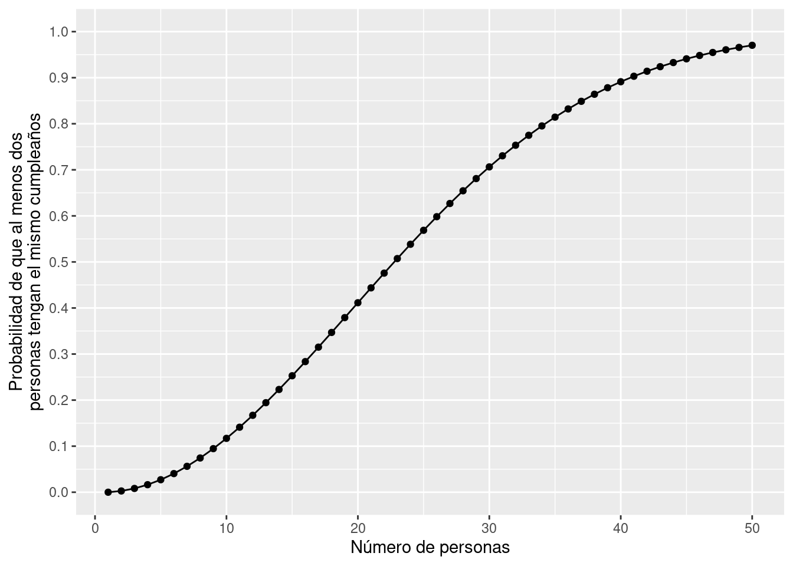
En el siguiente ejericicio queremos saber la fracción de ensayos (trials) donde al menos dos cumpleaños son iguales
```{r}
## setting seed para replicación
set.seed(4444)
k <- 23 # Número de personas
sims <- 1000 # number of simulations
event <- 0 # contador
for (i in 1:sims) {
days <- sample(1:365, k, replace = TRUE)
days.unique <- unique(days) # cumpleaños únicos
## Si hay duplicados, el número de cumpleaños únicos
## puede ser menos que el número de cumpleaños, que es "k"
if (length(days.unique) < k) {
event <- event + 1
}
}
## fracción de ensayos donde al menos dos cumpleaños son iguales
answer <- event / sims
answer
```[1] 0.511```{r}
data(FLVoters, package = "qss")
## how many observations?
dim(FLVoters)
glimpse(FLVoters)
```[1] 10000 6
Rows: 10,000
Columns: 6
$ surname <chr> "PIEDRA", "LYNCH", "CHESTER", "LATHROP", "HUMMEL", "CHRISTISON…
$ county <int> 115, 115, 115, 115, 115, 115, 115, 115, 1, 1, 115, 115, 115, 1…
$ VTD <int> 66, 13, 103, 80, 8, 55, 84, 48, 41, 39, 26, 45, 11, 48, 22, 88…
$ age <int> 58, 51, 63, 54, 77, 49, 77, 34, 56, 60, 44, 45, 80, 83, 88, 55…
$ gender <chr> "f", "m", "m", "m", "f", "m", "f", "f", "f", "m", "m", "f", "m…
$ race <chr> "white", "white", NA, "white", "white", "white", "white", "whi…```{r}
## Remover observaciones con valores NA
FLVoters <- FLVoters %>% drop_na()
dim(FLVoters)
```[1] 9113 6```{r}
margin_race <- FLVoters %>%
count(race) %>%
mutate(prop = n / sum(n))
tibble(margin_race)
```# A tibble: 6 × 3
race n prop
<chr> <int> <dbl>
1 asian 175 0.0192
2 black 1194 0.131
3 hispanic 1192 0.131
4 native 29 0.00318
5 other 310 0.0340
6 white 6213 0.682 ```{r}
# Definimos la paleta de colores
new_palette <- c("#a10684", "#572364", "#630b57", "#4c2882", "#6c4675", "#8A2BE2")
# Función para formatear porcentajes con 2 decimales (para etiquetas de barras)
percent_format_2 <- function(x) percent(x, accuracy = 0.01)
# Función para formatear porcentajes sin decimales (para eje Y)
percent_format_0 <- function(x) percent(x, accuracy = 1)
# Plot para margin_race
ggplot(margin_race, aes(x = race, y = prop, fill = race)) +
geom_bar(stat = "identity") +
geom_text(aes(label = percent_format_2(prop)), vjust = -0.5, color = "black") +
scale_y_continuous(labels = percent_format_0, limits = c(0, max(margin_race$prop) * 1.1)) +
scale_fill_manual(values = new_palette) +
labs(title = "Distribución de Raza", y = "Proporción", x = "Raza") +
theme_minimal() +
theme(legend.position = "none")
```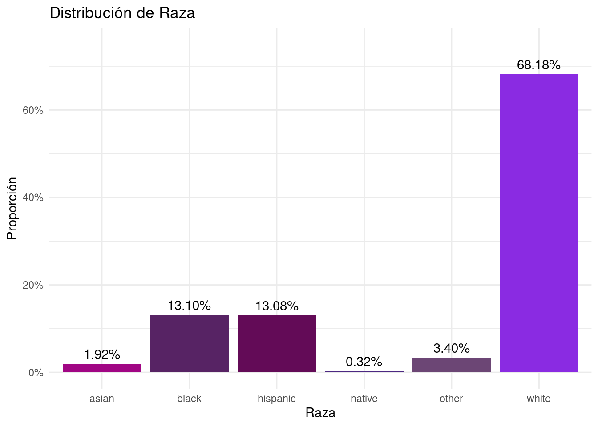
```{r}
margin_gender <-FLVoters %>%
count(gender) %>%
mutate(prop = n / sum(n))
tibble(margin_gender)
```# A tibble: 2 × 3
gender n prop
<chr> <int> <dbl>
1 f 4883 0.536
2 m 4230 0.464```{r}
# Plot para margin_gender
ggplot(margin_gender, aes(x = gender, y = prop, fill = gender)) +
geom_bar(stat = "identity") +
geom_text(aes(label = percent_format_2(prop)), vjust = -0.5, color = "black") +
scale_y_continuous(labels = percent_format_0, limits = c(0, max(margin_gender$prop) * 1.1)) +
scale_fill_manual(values = new_palette[c(1,6)]) +
labs(title = "Distribución de Género", y = "Proporción", x = "Género") +
theme_minimal() +
theme(legend.position = "none")
```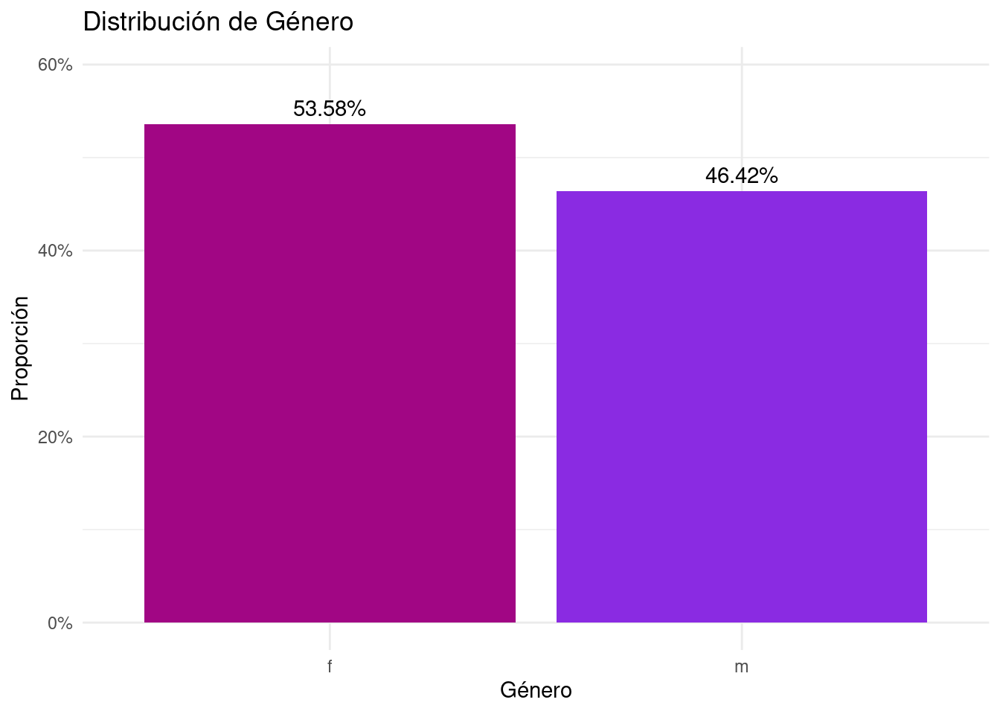
```{r}
margin_race_f <-FLVoters %>%
filter(gender == "f") %>%
count(race) %>%
mutate(prop = n / sum(n))
margin_race_f
``` race n prop
1 asian 83 0.016997747
2 black 678 0.138849068
3 hispanic 666 0.136391563
4 native 17 0.003481466
5 other 158 0.032357157
6 white 3281 0.671922998```{r}
# Plot para margin_race_f
ggplot(margin_race_f, aes(x = race, y = prop, fill = race)) +
geom_bar(stat = "identity") +
geom_text(aes(label = percent_format_2(prop)), vjust = -0.5, color = "black") +
scale_y_continuous(labels = percent_format_0, limits = c(0, max(margin_race_f$prop) * 1.1)) +
scale_fill_manual(values = new_palette) +
labs(title = "Distribución de Raza entre Mujeres", y = "Proporción", x = "Raza") +
theme_minimal() +
theme(legend.position = "none")
```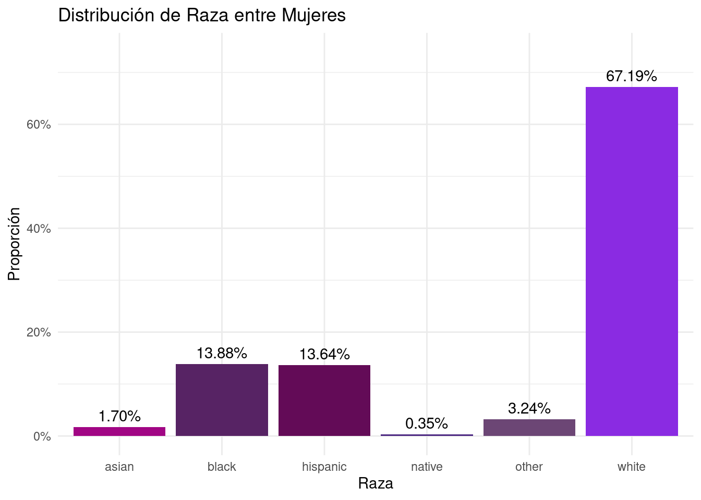
```{r}
margin_race_m <- FLVoters %>%
filter(gender == "m") %>%
count(race) %>%
mutate(prop = n / sum(n))
margin_race_m
``` race n prop
1 asian 92 0.021749409
2 black 516 0.121985816
3 hispanic 526 0.124349882
4 native 12 0.002836879
5 other 152 0.035933806
6 white 2932 0.693144208```{r}
# Plot para margin_race_m
ggplot(margin_race_m, aes(x = race, y = prop, fill = race)) +
geom_bar(stat = "identity") +
geom_text(aes(label = percent_format_2(prop)), vjust = -0.5, color = "black") +
scale_y_continuous(labels = percent_format_0, limits = c(0, max(margin_race_m$prop) * 1.1)) +
scale_fill_manual(values = new_palette) +
labs(title = "Distribución de Raza entre Hombres", y = "Proporción", x = "Raza") +
theme_minimal() +
theme(legend.position = "none")
```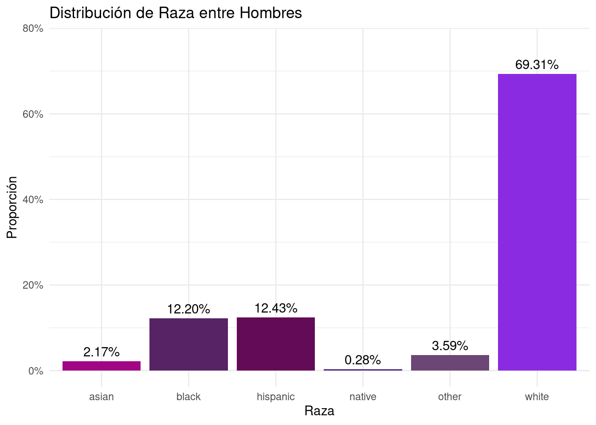
```{r}
joint_p <-FLVoters %>%
count(gender, race) %>%
mutate(prop = n / sum(n))
joint_p
``` gender race n prop
1 f asian 83 0.009107868
2 f black 678 0.074399210
3 f hispanic 666 0.073082410
4 f native 17 0.001865467
5 f other 158 0.017337869
6 f white 3281 0.360035115
7 m asian 92 0.010095468
8 m black 516 0.056622408
9 m hispanic 526 0.057719741
10 m native 12 0.001316800
11 m other 152 0.016679469
12 m white 2932 0.321738176```{r}
# Reordenar los niveles de 'race' basado en la proporción total
joint_p <- joint_p %>%
group_by(race) %>%
mutate(total = sum(prop)) %>%
ungroup() %>%
mutate(race = fct_reorder(race, total, .desc = TRUE))
# Definir colores para géneros
gender_colors <- c("#a10684", "#4c2882")
# Crear el gráfico de barras agrupadas
ggplot(joint_p, aes(x = race, y = prop, fill = gender)) +
geom_bar(stat = "identity", position = position_dodge(width = 0.9), width = 0.8) +
geom_text(aes(label = scales::percent(prop, accuracy = 0.1)),
position = position_dodge(width = 0.9),
vjust = -0.5, # Ajusta la posición vertical del texto
color = "black", size = 3) +
scale_y_continuous(labels = scales::percent_format(accuracy = 1),
expand = expansion(mult = c(0, 0.1))) + # Aumenta el espacio superior para las etiquetas
scale_fill_manual(values = gender_colors,
labels = c("Femenino", "Masculino")) +
labs(#title = "Distribución de Género por Raza",
x = "",
y = "Proporción",
fill = "Género") +
theme_minimal(base_size = 12) +
theme(
plot.title = element_text(hjust = 0.5, size = 16),
axis.text.x = element_text(hjust = 1, face = "bold"),
axis.text.y = element_text(),
legend.position = "top",
legend.title = element_text(),
panel.grid.major.x = element_blank(),
panel.grid.minor = element_blank()
)
```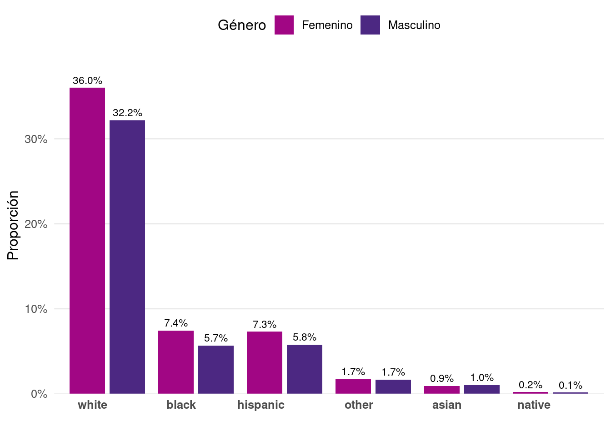
```{r}
# Definir colores para géneros (usando los mismos que en el segundo gráfico)
gender_colors <- c("#a10684", "#4c2882")
# Crear el gráfico actualizado
FLVoters %>%
count(gender, race) %>%
group_by(gender) %>%
mutate(prop = n / sum(n)) %>%
ungroup() %>%
mutate(race = fct_reorder(race, prop, sum, .desc = TRUE)) %>% # Reordenar razas por proporción total
ggplot(aes(x = race, y = prop, fill = gender)) +
geom_bar(stat = "identity", position = position_dodge(width = 0.9), width = 0.8) +
geom_text(aes(label = scales::percent(prop, accuracy = 0.1)),
position = position_dodge(width = 0.9),
vjust = -0.5,
color = "black", size = 3) +
scale_y_continuous(labels = scales::percent_format(accuracy = 1),
expand = expansion(mult = c(0, 0.1))) +
scale_fill_manual(values = gender_colors,
labels = c("Femenino", "Masculino")) +
labs(title = "Distribución de raza por género",
x = "",
y = "Proporción",
fill = "Género") +
theme_minimal(base_size = 12) +
theme(
plot.title = element_text(hjust = 0.5, size = 16, face = "bold"),
axis.text.x = element_text(angle = 0, hjust = 0.5, face = "bold"),
axis.text.y = element_text(face = "bold"),
legend.position = "top",
legend.title = element_text(face = "bold"),
panel.grid.major.x = element_blank(),
panel.grid.minor = element_blank()
)
```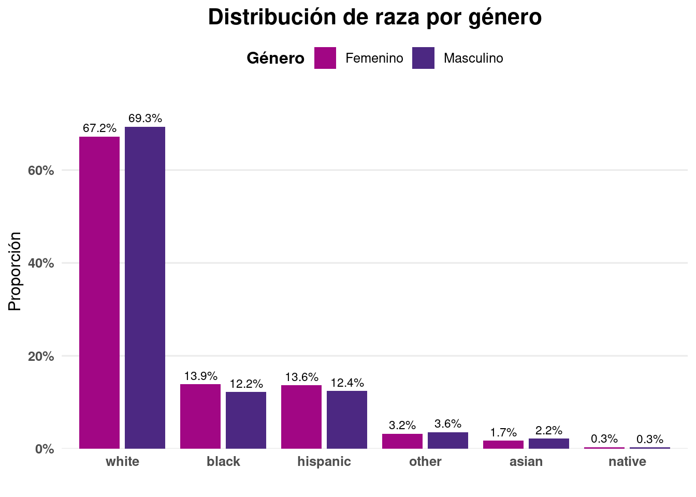
Cálculo de las proporciones:
```{r}
joint_p_wider <- joint_p %>%
select(-n) %>%
pivot_wider(names_from = gender,values_from = prop) %>%
mutate(total_prop = f + m)
joint_p_wider
```# A tibble: 6 × 5
race total f m total_prop
<fct> <dbl> <dbl> <dbl> <dbl>
1 asian 0.0192 0.00911 0.0101 0.0192
2 black 0.131 0.0744 0.0566 0.131
3 hispanic 0.131 0.0731 0.0577 0.131
4 native 0.00318 0.00187 0.00132 0.00318
5 other 0.0340 0.0173 0.0167 0.0340
6 white 0.682 0.360 0.322 0.682 ```{r}
# Plot para joint_p_wider (con género como columnas)
joint_p_wider_gender <- joint_p %>%
select(-n) %>%
pivot_wider(names_from = gender, values_from = prop)
ggplot(joint_p_wider_gender, aes(x = race)) +
geom_bar(aes(y = f, fill = "Femenino"), stat = "identity", position = "dodge") +
geom_bar(aes(y = -m, fill = "Masculino"), stat = "identity", position = "dodge") +
geom_hline(yintercept = 0, color = "black", size = 0.5) +
scale_y_continuous(labels = function(x) percent_format_2(abs(x))) +
scale_fill_manual(values = new_palette[c(1,6)]) +
coord_flip() +
labs(title = "Distribución de Género por Raza",
y = "Proporción", x = "Raza",
fill = "Género") +
theme_minimal()
```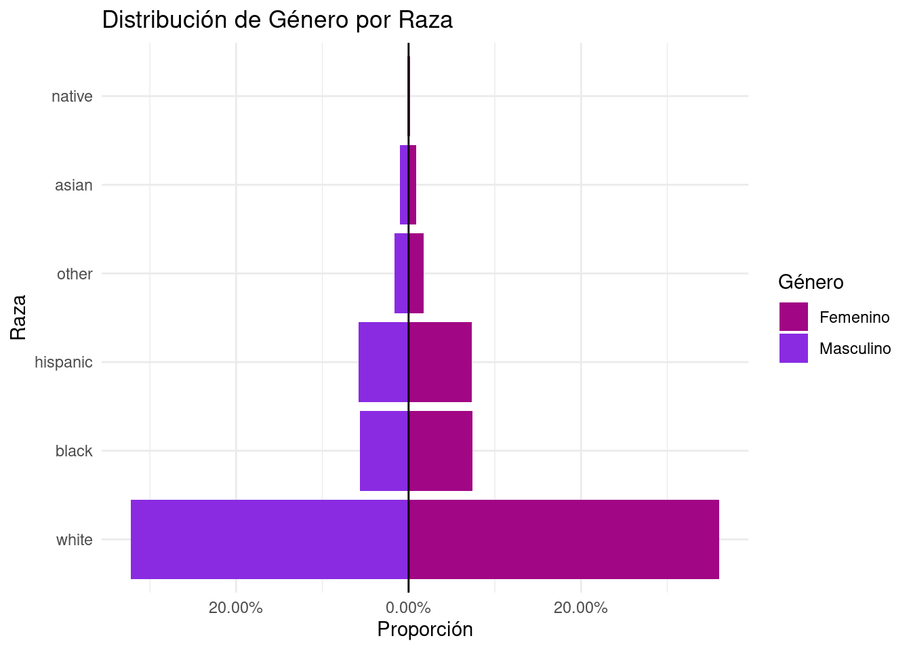
```{r}
joint_p_wider <- joint_p %>%
select(-n) %>%
pivot_wider(names_from = race, values_from = prop) %>%
mutate(total_prop = rowSums(across(where(is.numeric))))
joint_p_wider
```# A tibble: 12 × 9
gender total asian black hispanic native other white total_prop
<chr> <dbl> <dbl> <dbl> <dbl> <dbl> <dbl> <dbl> <dbl>
1 f 0.0192 0.00911 NA NA NA NA NA NA
2 f 0.131 NA 0.0744 NA NA NA NA NA
3 f 0.131 NA NA 0.0731 NA NA NA NA
4 f 0.00318 NA NA NA 0.00187 NA NA NA
5 f 0.0340 NA NA NA NA 0.0173 NA NA
6 f 0.682 NA NA NA NA NA 0.360 NA
7 m 0.0192 0.0101 NA NA NA NA NA NA
8 m 0.131 NA 0.0566 NA NA NA NA NA
9 m 0.131 NA NA 0.0577 NA NA NA NA
10 m 0.00318 NA NA NA 0.00132 NA NA NA
11 m 0.0340 NA NA NA NA 0.0167 NA NA
12 m 0.682 NA NA NA NA NA 0.322 NA```{r}
theme(legend.title = element_blank())
```List of 1
$ legend.title: list()
..- attr(*, "class")= chr [1:2] "element_blank" "element"
- attr(*, "class")= chr [1:2] "theme" "gg"
- attr(*, "complete")= logi FALSE
- attr(*, "validate")= logi TRUEUsamos ELSOC (COES), su ola 4 del año 2019). Más información sobre esta encuesta acá. Estos datos tienen una bateria de redes egocentradas, la cual usaremos para realizar operaciones de orden de mediana complejidad. En esta batería de preguntas, se le pide al entrevistado que indique hasta 5 de sus contactos que considere más cercanos y luego se le preguntan varias características de las personas mencionadas por el entrevistado. En la medida que los datos acerca de las personas conocidas por el entrevistado son dependientes de la mención del entrevistado, existe una extructura multinivel.
Las estructuras de datos multinivel son aquellas que contienen niveles de anidación adicional al individuo. Por ejemplo, los individuos pueden estar anidados en escuelas o bbien, como la figura de abajo lo ilustra, los individuos mencionados por los entrevistados (alter) están anidados en los entrevistados (egos), esto genera dependencia y en los análisis inferenciales debe modelarse.

El objetivo es crear datos de red “egocentrada” con estructura long. Esto implica que tendremos que modificar la estructura original de los datos:
En su formato original cada fila representa a un entrevistado, y la información acerca de sus contactos esta agregada hacia el lado, es decir, en formato wide.
Una base en formato long, implica que pasaremos del formato “una fila” un individuo (con información hacia el lado o wide), a un formato diádico (en términos de redes).
Esto es, en un formato long, los individuos tendrán tantas filas como contactos mencionó en la entrevista, es decir la información de su red cercana estará agregada hacia abajo.
Una vez hecho esto, construiremos un plot que mostrara información sobre como se distribuyen proporcionalmente las diádas homofílicas en términos educacionales. Para más información acerca de la homofilia por favor revisen el siguiente artículo.
Deben cargar un par de librerías antes de cargar los datos. Están marcadas con el # en el siguiente chunck.
```{r}
# install.packages("devtools")
#library(devtools)
##install.packages("httr")
url <- "https://github.com/rcantillan/ricantillan.rbind.io/raw/main/dat/ELSOC/ELSOC_W04_v2.01_R.RData"
response <- GET(url)
local_path <- "ELSOC_W04_v2.01_R.RData"
writeBin(response$content, local_path)
load("ELSOC_W04_v2.01_R.RData") #reemplazar por ruta local de descarga
```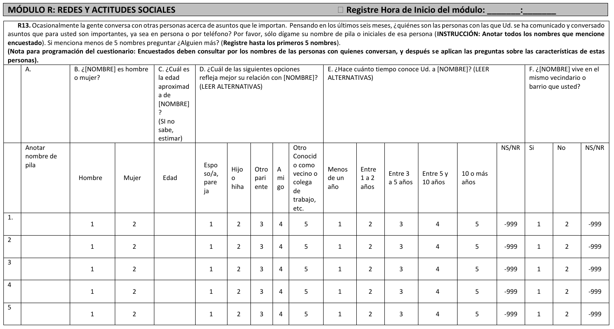
Wide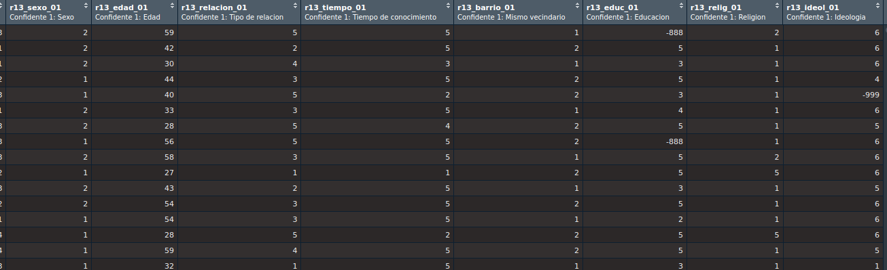
Con la función glimpse podemos visualizar los datos de manera más acotada y en orden invertido. Es decir, las columnas indexadas con $ aparecen como filas.
```{r}
egonet<-elsoc_2019 %>%
#glimpse() %>%
select(7:24)
glimpse(egonet)
```Rows: 3,417
Columns: 18
$ r13_sexo_01 <dbl> 2, 2, 2, 1, 1, 2, 2, 1, 2, 1, 2, 2, 1, 1, 1, 1, 1, 1, …
$ r13_edad_01 <dbl> 59, 42, 30, 44, 40, 33, 28, 56, 58, 27, 43, 54, 54, 28…
$ r13_relacion_01 <dbl> 5, 2, 4, 3, 5, 3, 5, 5, 3, 1, 2, 3, 3, 5, 4, 1, 4, 1, …
$ r13_tiempo_01 <dbl> 5, 5, 3, 5, 2, 5, 4, 5, 5, 1, 5, 5, 5, 2, 5, 5, 1, 5, …
$ r13_barrio_01 <dbl> 1, 2, 1, 2, 2, 1, 2, 2, 1, 2, 1, 2, 1, 2, 2, 1, 2, 1, …
$ r13_educ_01 <dbl> -888, 5, 3, 5, 3, 4, 5, -888, 5, 5, 3, 5, 2, 5, 5, 3, …
$ r13_relig_01 <dbl> 2, 1, 1, 1, 1, 1, 1, 1, 2, 5, 1, 1, 1, 5, 1, 1, 1, 1, …
$ r13_ideol_01 <dbl> 6, 6, 6, 4, -999, 6, 5, 6, 6, 6, 5, 6, 6, 6, 5, 1, 6, …
$ r13_confia_01 <dbl> 3, 3, 1, 3, 1, 3, 3, 3, 3, 3, 3, 3, 3, 2, 3, 3, 1, 3, …
$ r13_sexo_02 <dbl> 2, NA, NA, 1, 1, NA, 2, 2, 1, 2, 1, 2, NA, 2, 2, 2, 1,…
$ r13_edad_02 <dbl> 60, NA, NA, 70, 40, NA, 27, 34, 28, 21, 22, 45, NA, 49…
$ r13_relacion_02 <dbl> 5, NA, NA, 4, 2, NA, 5, 1, 4, 4, 3, 4, NA, 5, 4, 3, 4,…
$ r13_tiempo_02 <dbl> 5, NA, NA, 5, 5, NA, 4, 5, 4, 3, 5, 3, NA, 3, 5, 5, 1,…
$ r13_barrio_02 <dbl> 1, NA, NA, 2, 2, NA, 2, 1, 2, 2, 1, 1, NA, 2, 2, 2, 2,…
$ r13_educ_02 <dbl> -888, NA, NA, 3, 3, NA, 5, 3, 5, 5, 5, 3, NA, 3, 5, 3,…
$ r13_relig_02 <dbl> 2, NA, NA, 1, 1, NA, 3, 4, 3, 5, 5, 1, NA, 1, 2, 1, -8…
$ r13_ideol_02 <dbl> 6, NA, NA, 4, -999, NA, 5, 6, 6, 6, 5, 6, NA, 6, 3, 1,…
$ r13_confia_02 <dbl> 3, NA, NA, 3, 3, NA, 3, 3, 3, 3, 3, 3, NA, 2, 3, 3, 1,…De otro modo, la función knitr, del paquete kable, nos permite incrustar tablas de datos en formato tibble dentro del documento html.
| r13_sexo_01 | r13_edad_01 | r13_relacion_01 | r13_tiempo_01 | r13_barrio_01 | r13_educ_01 | r13_relig_01 | r13_ideol_01 | r13_confia_01 | r13_sexo_02 | r13_edad_02 | r13_relacion_02 | r13_tiempo_02 | r13_barrio_02 | r13_educ_02 | r13_relig_02 | r13_ideol_02 | r13_confia_02 |
|---|---|---|---|---|---|---|---|---|---|---|---|---|---|---|---|---|---|
| 2 | 59 | 5 | 5 | 1 | -888 | 2 | 6 | 3 | 2 | 60 | 5 | 5 | 1 | -888 | 2 | 6 | 3 |
| 2 | 42 | 2 | 5 | 2 | 5 | 1 | 6 | 3 | NA | NA | NA | NA | NA | NA | NA | NA | NA |
| 2 | 30 | 4 | 3 | 1 | 3 | 1 | 6 | 1 | NA | NA | NA | NA | NA | NA | NA | NA | NA |
| 1 | 44 | 3 | 5 | 2 | 5 | 1 | 4 | 3 | 1 | 70 | 4 | 5 | 2 | 3 | 1 | 4 | 3 |
| 1 | 40 | 5 | 2 | 2 | 3 | 1 | -999 | 1 | 1 | 40 | 2 | 5 | 2 | 3 | 1 | -999 | 3 |
| 2 | 33 | 3 | 5 | 1 | 4 | 1 | 6 | 3 | NA | NA | NA | NA | NA | NA | NA | NA | NA |
| 2 | 28 | 5 | 4 | 2 | 5 | 1 | 5 | 3 | 2 | 27 | 5 | 4 | 2 | 5 | 3 | 5 | 3 |
| 1 | 56 | 5 | 5 | 2 | -888 | 1 | 6 | 3 | 2 | 34 | 1 | 5 | 1 | 3 | 4 | 6 | 3 |
| 2 | 58 | 3 | 5 | 1 | 5 | 2 | 6 | 3 | 1 | 28 | 4 | 4 | 2 | 5 | 3 | 6 | 3 |
| 1 | 27 | 1 | 1 | 2 | 5 | 5 | 6 | 3 | 2 | 21 | 4 | 3 | 2 | 5 | 5 | 6 | 3 |
| 2 | 43 | 2 | 5 | 1 | 3 | 1 | 5 | 3 | 1 | 22 | 3 | 5 | 1 | 5 | 5 | 5 | 3 |
| 2 | 54 | 3 | 5 | 2 | 5 | 1 | 6 | 3 | 2 | 45 | 4 | 3 | 1 | 3 | 1 | 6 | 3 |
| 1 | 54 | 3 | 5 | 1 | 2 | 1 | 6 | 3 | NA | NA | NA | NA | NA | NA | NA | NA | NA |
Renombramos el identificador de la encuesta. Ahora se llamará .egoID. y renombramos la base de datos. Ahora se llamará a.
```{r}
a<-elsoc_2019 %>% dplyr::rename(.egoID = idencuesta)
```alter mencionadosEn los datos de la red egocentrada tenemos información sobre 1) el sexo, 2) edad, 3) educación, 4) religión, 5) ideología política, 6) si viven en el mismo barrio, y 7) tipo de relación entre el Ego y el Alter mencionado. En el siguiente chunck:
Creamos un vector string con los caracteres que intentaremos capturar de los nombres de las columnas con la información de los confidentes (Aler): ej. sexo, edad, etc. El vector se llamará “columnas”.
Creamos un vector con un solo valor “5”, el cual representa el valor máximo de conocidos que los entrevistados pueden mencionar.
Luego creamos una lista vacia en donde alacenaremos la selección.
Creamos un loop para seleccionar y renombrar las variables.
agregamos las listas creadas con la función bind_rows.
ordenamos de acuerdo con el id del entrevistado (.egoID) con la función arrange.
```{r}
columnas <- c("sexo", "edad", "educ", "relig", "ideol", "barrio", "relacion")
num_alters <- 5
alter_list <- list()
for (i in 1:num_alters) {
alter_cols <- paste0("r13_", columnas, "_", sprintf("%02d", i))
alter <- a %>%
dplyr::select(.egoID, all_of(alter_cols)) %>%
rename_with(~ columnas, alter_cols) %>%
mutate(n = i)
alter_list[[i]] <- alter
}
alteris <- bind_rows(alter_list)
alteris<-arrange(alteris, .egoID)
```Las estructuras de datos long son multinivel por que tienen al menos dos niveles: ej. Cuando hay variaas observaciones en el tiempo, tenemos a los mismos individuos observados dos o más veces. En efecto, las observaciones están anidadas en los individuos. En el ejemplo acá revisado, transformamos el formato original de datos ELSOC (estructura wide) a formato long, lo cual quiere decir que las observaciones anidadas en el Entrevistado (ego), estarán enlistadas hacia abajo y no hacia el lado (wide) como columnas adicionales. Abajo un ejemplo:
| .egoID | sexo | edad | educ | relig | ideol | barrio | relacion | n |
|---|---|---|---|---|---|---|---|---|
| 1101011 | 2 | 59 | -888 | 2 | 6 | 1 | 5 | 1 |
| 1101011 | 2 | 60 | -888 | 2 | 6 | 1 | 5 | 2 |
| 1101011 | 1 | 62 | -888 | 2 | 6 | 1 | 5 | 3 |
| 1101011 | NA | NA | NA | NA | NA | NA | NA | 4 |
| 1101011 | NA | NA | NA | NA | NA | NA | NA | 5 |
| 1101012 | 2 | 42 | 5 | 1 | 6 | 2 | 2 | 1 |
| 1101012 | NA | NA | NA | NA | NA | NA | NA | 2 |
| 1101012 | NA | NA | NA | NA | NA | NA | NA | 3 |
| 1101012 | NA | NA | NA | NA | NA | NA | NA | 4 |
| 1101012 | NA | NA | NA | NA | NA | NA | NA | 5 |
| 1101013 | 2 | 30 | 3 | 1 | 6 | 1 | 4 | 1 |
| 1101013 | NA | NA | NA | NA | NA | NA | NA | 2 |
| 1101013 | NA | NA | NA | NA | NA | NA | NA | 3 |
| 1101013 | NA | NA | NA | NA | NA | NA | NA | 4 |
| 1101013 | NA | NA | NA | NA | NA | NA | NA | 5 |
| 1101021 | 1 | 44 | 5 | 1 | 4 | 2 | 3 | 1 |
| 1101021 | 1 | 70 | 3 | 1 | 4 | 2 | 4 | 2 |
| 1101021 | NA | NA | NA | NA | NA | NA | NA | 3 |
| 1101021 | NA | NA | NA | NA | NA | NA | NA | 4 |
| 1101021 | NA | NA | NA | NA | NA | NA | NA | 5 |
| 1101023 | 1 | 40 | 3 | 1 | -999 | 2 | 5 | 1 |
| 1101023 | 1 | 40 | 3 | 1 | -999 | 2 | 2 | 2 |
| 1101023 | 2 | 65 | 5 | 1 | -999 | 2 | 5 | 3 |
| 1101023 | NA | NA | NA | NA | NA | NA | NA | 4 |
| 1101023 | NA | NA | NA | NA | NA | NA | NA | 5 |
| 1101032 | 2 | 33 | 4 | 1 | 6 | 1 | 3 | 1 |
| 1101032 | NA | NA | NA | NA | NA | NA | NA | 2 |
| 1101032 | NA | NA | NA | NA | NA | NA | NA | 3 |
| 1101032 | NA | NA | NA | NA | NA | NA | NA | 4 |
| 1101032 | NA | NA | NA | NA | NA | NA | NA | 5 |
| 1101033 | 2 | 28 | 5 | 1 | 5 | 2 | 5 | 1 |
| 1101033 | 2 | 27 | 5 | 3 | 5 | 2 | 5 | 2 |
| 1101033 | 2 | 38 | 5 | 3 | 1 | 2 | 5 | 3 |
| 1101033 | NA | NA | NA | NA | NA | NA | NA | 4 |
| 1101033 | NA | NA | NA | NA | NA | NA | NA | 5 |
| 1101041 | 1 | 56 | -888 | 1 | 6 | 2 | 5 | 1 |
| 1101041 | 2 | 34 | 3 | 4 | 6 | 1 | 1 | 2 |
| 1101041 | 1 | 28 | 3 | 1 | 6 | 2 | 5 | 3 |
| 1101041 | NA | NA | NA | NA | NA | NA | NA | 4 |
| 1101041 | NA | NA | NA | NA | NA | NA | NA | 5 |
| 1101051 | 2 | 58 | 5 | 2 | 6 | 1 | 3 | 1 |
| 1101051 | 1 | 28 | 5 | 3 | 6 | 2 | 4 | 2 |
| 1101051 | 1 | 24 | 3 | 3 | 6 | 1 | 4 | 3 |
| 1101051 | NA | NA | NA | NA | NA | NA | NA | 4 |
| 1101051 | NA | NA | NA | NA | NA | NA | NA | 5 |
| 1101053 | 1 | 27 | 5 | 5 | 6 | 2 | 1 | 1 |
| 1101053 | 2 | 21 | 5 | 5 | 6 | 2 | 4 | 2 |
| 1101053 | NA | NA | NA | NA | NA | NA | NA | 3 |
| 1101053 | NA | NA | NA | NA | NA | NA | NA | 4 |
| 1101053 | NA | NA | NA | NA | NA | NA | NA | 5 |
Como vemos, la bbdd anterior contiene la información de cada uno de los contactos mencionados por los entrevistados, por eso se reptien los identificadores .egoID hasta 5 veces. Dado el límite de menciones incluido por diseño. Puede ser pertinente borrar las filas que contienen NA en todas las filas de características.
Otra aproximación -pero menos eficiente- es la siguiente:
Crear 5 data frames, uno por confidente mencionado por el entrevistado. Cada uno de los sub data frames se llamará alter_1, alter_2, alter_3, alter_5.
Luego se agregan hacia abajo con la función rownbind
```{r}
alter_1<-a %>%
dplyr::select(.egoID,
alter_sexo=r13_sexo_01,
alter_edad=r13_edad_01,
alter_rel=r13_relacion_01,
alter_tiempo=r13_tiempo_01,
alter_barrio=r13_barrio_01,
alter_educ=r13_educ_01,
alter_relig=r13_relig_01,
alter_ideol=r13_ideol_01)
alter_2<-a %>%
dplyr::select(.egoID,
alter_sexo=r13_sexo_02,
alter_edad=r13_edad_02,
alter_rel=r13_relacion_02,
alter_tiempo=r13_tiempo_02,
alter_barrio=r13_barrio_02,
alter_educ=r13_educ_02,
alter_relig=r13_relig_02,
alter_ideol=r13_ideol_02)
alter_3<-a %>%
dplyr::select(.egoID,
alter_sexo=r13_sexo_03,
alter_edad=r13_edad_03,
alter_rel=r13_relacion_03,
alter_tiempo=r13_tiempo_03,
alter_barrio=r13_barrio_03,
alter_educ=r13_educ_03,
alter_relig=r13_relig_03,
alter_ideol=r13_ideol_03)
alter_4<- a %>%
dplyr::select(.egoID,
alter_sexo=r13_sexo_04,
alter_edad=r13_edad_04,
alter_rel=r13_relacion_04,
alter_tiempo=r13_tiempo_04,
alter_barrio=r13_barrio_04,
alter_educ=r13_educ_04,
alter_relig=r13_relig_04,
alter_ideol=r13_ideol_04)
alter_5<-a %>%
dplyr::select(.egoID,
alter_sexo=r13_sexo_05,
alter_edad=r13_edad_05,
alter_rel=r13_relacion_05,
alter_tiempo=r13_tiempo_05,
alter_barrio=r13_barrio_05,
alter_educ=r13_educ_05,
alter_relig=r13_relig_05,
alter_ideol=r13_ideol_05)
```En el siguiente chunk creamos un vector identificador para cada uno de los alteris presentes en la data “alteris”. Lo identificamos como objeto tibble. Además creamos un identificador único para cada uno de los confidentes.
```{r}
alteris<-rbind(alter_1,alter_2,alter_3,alter_4,alter_5)
alteris<-arrange(alteris, .egoID)
alteris <- rowid_to_column(alteris, var = ".altID")
alteris <- as_tibble(alteris)
#alteris$n <- NULL
``````{r}
as_tibble(alteris)
```# A tibble: 17,085 × 10
.altID .egoID alter_sexo alter_edad alter_rel alter_tiempo alter_barrio
<int> <dbl> <dbl> <dbl> <dbl> <dbl> <dbl>
1 1 1101011 2 59 5 5 1
2 2 1101011 2 60 5 5 1
3 3 1101011 1 62 5 5 1
4 4 1101011 NA NA NA NA NA
5 5 1101011 NA NA NA NA NA
6 6 1101012 2 42 2 5 2
7 7 1101012 NA NA NA NA NA
8 8 1101012 NA NA NA NA NA
9 9 1101012 NA NA NA NA NA
10 10 1101012 NA NA NA NA NA
# ℹ 17,075 more rows
# ℹ 3 more variables: alter_educ <dbl>, alter_relig <dbl>, alter_ideol <dbl>Como vemos el resultado es muy similar.
A continuación, Recodificamos los valores de los atributos de los alteris.
```{r}
alteris$alter_educ <-factor(Recode(alteris$alter_educ ,"1=1;2:3=2;4=3;5=4;-999=NA"))
alteris$alter_relig<-factor(Recode(alteris$alter_relig,"1=1;2=2;3=3;4=4;5=5;-999=NA"))
alteris$alter_ideol<-factor(Recode(alteris$alter_ideol,"1=1;2=2;3=3;4=4;5=5;6=6;-999=NA"))
alteris$alter_edad <-factor(Recode(alteris$alter_edad ,"0:18=1;19:29=2;30:40=3;41:51=4;52:62=5;63:100=6"))
alteris$alter_sexo <-factor(Recode(alteris$alter_sexo ,"1=1;2=2"))
#alteris<-na.omit(alteris)
```Creamos un subset con la data de ego equivalente a la data de los alteris. Las nombramos de la misma manera.
```{r}
egos <-a %>%
dplyr::select(.egoID,
ego_sexo=m0_sexo,
ego_edad=m0_edad,
ego_ideol=c15,
ego_educ=m01,
ego_relig=m38,
ego_ideol=c15)
egos <- as_tibble(egos)
```Recodificamos las variables de la data de ego siguiendo el patrón de la data de alteris.
```{r}
egos$ego_educ <-factor(Recode(egos$ego_educ,"1:3=1;4:5=2;6:7=3;8:10=4;-999:-888=NA"))
egos$ego_relig<-factor(Recode(egos$ego_relig,"1=1;2=2;9=3;7:8=4;3:6=5;-999:-888=NA"))
egos$ego_ideol<-factor(Recode(egos$ego_ideol,"9:10=1;6:8=2;5=3;2:4=4;0:1=5;11:12=6;-999:-888=NA"))
egos$ego_edad <-factor(Recode(egos$ego_edad,"18=1;19:29=2;30:40=3;41:51=4;52:62=5;63:100=6"))
egos$ego_sexo <-factor(Recode(egos$ego_sexo,"1=1;2=2"))
```Con la función left_join agregamos la data de alteris y egos hacia el lado, en función del id de ego.
```{r}
obs<-left_join(alteris,egos, by=".egoID")
obs[obs=="-999"] <- NA
obs[obs=="-888"] <- NA
```| .altID | .egoID | alter_sexo | alter_edad | alter_rel | alter_tiempo | alter_barrio | alter_educ | alter_relig | alter_ideol | ego_sexo | ego_edad | ego_ideol | ego_educ | ego_relig |
|---|---|---|---|---|---|---|---|---|---|---|---|---|---|---|
| 1 | 1101011 | 2 | 5 | 5 | 5 | 1 | NA | 2 | 6 | 2 | 6 | 5 | 1 | 1 |
| 2 | 1101011 | 2 | 5 | 5 | 5 | 1 | NA | 2 | 6 | 2 | 6 | 5 | 1 | 1 |
| 3 | 1101011 | 1 | 5 | 5 | 5 | 1 | NA | 2 | 6 | 2 | 6 | 5 | 1 | 1 |
| 4 | 1101011 | NA | NA | NA | NA | NA | NA | NA | NA | 2 | 6 | 5 | 1 | 1 |
| 5 | 1101011 | NA | NA | NA | NA | NA | NA | NA | NA | 2 | 6 | 5 | 1 | 1 |
| 6 | 1101012 | 2 | 4 | 2 | 5 | 2 | 4 | 1 | 6 | 2 | 6 | 6 | 2 | 1 |
| 7 | 1101012 | NA | NA | NA | NA | NA | NA | NA | NA | 2 | 6 | 6 | 2 | 1 |
| 8 | 1101012 | NA | NA | NA | NA | NA | NA | NA | NA | 2 | 6 | 6 | 2 | 1 |
| 9 | 1101012 | NA | NA | NA | NA | NA | NA | NA | NA | 2 | 6 | 6 | 2 | 1 |
| 10 | 1101012 | NA | NA | NA | NA | NA | NA | NA | NA | 2 | 6 | 6 | 2 | 1 |
| 11 | 1101013 | 2 | 3 | 4 | 3 | 1 | 2 | 1 | 6 | 2 | 3 | 6 | 2 | 1 |
| 12 | 1101013 | NA | NA | NA | NA | NA | NA | NA | NA | 2 | 3 | 6 | 2 | 1 |
| 13 | 1101013 | NA | NA | NA | NA | NA | NA | NA | NA | 2 | 3 | 6 | 2 | 1 |
| 14 | 1101013 | NA | NA | NA | NA | NA | NA | NA | NA | 2 | 3 | 6 | 2 | 1 |
| 15 | 1101013 | NA | NA | NA | NA | NA | NA | NA | NA | 2 | 3 | 6 | 2 | 1 |
| 16 | 1101021 | 1 | 4 | 3 | 5 | 2 | 4 | 1 | 4 | 1 | 5 | 3 | 4 | 1 |
| 17 | 1101021 | 1 | 6 | 4 | 5 | 2 | 2 | 1 | 4 | 1 | 5 | 3 | 4 | 1 |
| 18 | 1101021 | NA | NA | NA | NA | NA | NA | NA | NA | 1 | 5 | 3 | 4 | 1 |
| 19 | 1101021 | NA | NA | NA | NA | NA | NA | NA | NA | 1 | 5 | 3 | 4 | 1 |
| 20 | 1101021 | NA | NA | NA | NA | NA | NA | NA | NA | 1 | 5 | 3 | 4 | 1 |
| 21 | 1101023 | 1 | 3 | 5 | 2 | 2 | 2 | 1 | NA | 1 | 6 | 3 | 2 | 1 |
| 22 | 1101023 | 1 | 3 | 2 | 5 | 2 | 2 | 1 | NA | 1 | 6 | 3 | 2 | 1 |
| 23 | 1101023 | 2 | 6 | 5 | 1 | 2 | 4 | 1 | NA | 1 | 6 | 3 | 2 | 1 |
| 24 | 1101023 | NA | NA | NA | NA | NA | NA | NA | NA | 1 | 6 | 3 | 2 | 1 |
| 25 | 1101023 | NA | NA | NA | NA | NA | NA | NA | NA | 1 | 6 | 3 | 2 | 1 |
| 26 | 1101032 | 2 | 3 | 3 | 5 | 1 | 3 | 1 | 6 | 2 | 5 | 6 | 2 | 1 |
| 27 | 1101032 | NA | NA | NA | NA | NA | NA | NA | NA | 2 | 5 | 6 | 2 | 1 |
| 28 | 1101032 | NA | NA | NA | NA | NA | NA | NA | NA | 2 | 5 | 6 | 2 | 1 |
| 29 | 1101032 | NA | NA | NA | NA | NA | NA | NA | NA | 2 | 5 | 6 | 2 | 1 |
| 30 | 1101032 | NA | NA | NA | NA | NA | NA | NA | NA | 2 | 5 | 6 | 2 | 1 |
| 31 | 1101033 | 2 | 2 | 5 | 4 | 2 | 4 | 1 | 5 | 2 | 3 | 3 | 4 | 1 |
| 32 | 1101033 | 2 | 2 | 5 | 4 | 2 | 4 | 3 | 5 | 2 | 3 | 3 | 4 | 1 |
| 33 | 1101033 | 2 | 3 | 5 | 3 | 2 | 4 | 3 | 1 | 2 | 3 | 3 | 4 | 1 |
| 34 | 1101033 | NA | NA | NA | NA | NA | NA | NA | NA | 2 | 3 | 3 | 4 | 1 |
| 35 | 1101033 | NA | NA | NA | NA | NA | NA | NA | NA | 2 | 3 | 3 | 4 | 1 |
| 36 | 1101041 | 1 | 5 | 5 | 5 | 2 | NA | 1 | 6 | 1 | 4 | 3 | 4 | 1 |
| 37 | 1101041 | 2 | 3 | 1 | 5 | 1 | 2 | 4 | 6 | 1 | 4 | 3 | 4 | 1 |
| 38 | 1101041 | 1 | 2 | 5 | 4 | 2 | 2 | 1 | 6 | 1 | 4 | 3 | 4 | 1 |
| 39 | 1101041 | NA | NA | NA | NA | NA | NA | NA | NA | 1 | 4 | 3 | 4 | 1 |
| 40 | 1101041 | NA | NA | NA | NA | NA | NA | NA | NA | 1 | 4 | 3 | 4 | 1 |
| 41 | 1101051 | 2 | 5 | 3 | 5 | 1 | 4 | 2 | 6 | 1 | 2 | 6 | 3 | 2 |
| 42 | 1101051 | 1 | 2 | 4 | 4 | 2 | 4 | 3 | 6 | 1 | 2 | 6 | 3 | 2 |
| 43 | 1101051 | 1 | 2 | 4 | 4 | 1 | 2 | 3 | 6 | 1 | 2 | 6 | 3 | 2 |
| 44 | 1101051 | NA | NA | NA | NA | NA | NA | NA | NA | 1 | 2 | 6 | 3 | 2 |
| 45 | 1101051 | NA | NA | NA | NA | NA | NA | NA | NA | 1 | 2 | 6 | 3 | 2 |
| 46 | 1101053 | 1 | 2 | 1 | 1 | 2 | 4 | 5 | 6 | 2 | 2 | 6 | 4 | 5 |
| 47 | 1101053 | 2 | 2 | 4 | 3 | 2 | 4 | 5 | 6 | 2 | 2 | 6 | 4 | 5 |
| 48 | 1101053 | NA | NA | NA | NA | NA | NA | NA | NA | 2 | 2 | 6 | 4 | 5 |
| 49 | 1101053 | NA | NA | NA | NA | NA | NA | NA | NA | 2 | 2 | 6 | 4 | 5 |
| 50 | 1101053 | NA | NA | NA | NA | NA | NA | NA | NA | 2 | 2 | 6 | 4 | 5 |
El siguiente código crea una tabla long para ser ploteada como un heatmap en ggplot
```{r}
table<-as.data.frame(prop.table(table(obs$ego_educ,obs$alter_educ)))
colnames(table)<-c("Ego_educ", "Alter_educ", "Prop")
#filtramos
table<-table%>%filter(Alter_educ!="-888")
``````{r}
ggplot(table,aes(Ego_educ, Alter_educ))+
geom_tile(aes(fill=Prop))+
scale_fill_gradient(low="white", high="#301934") +
theme_grey()
```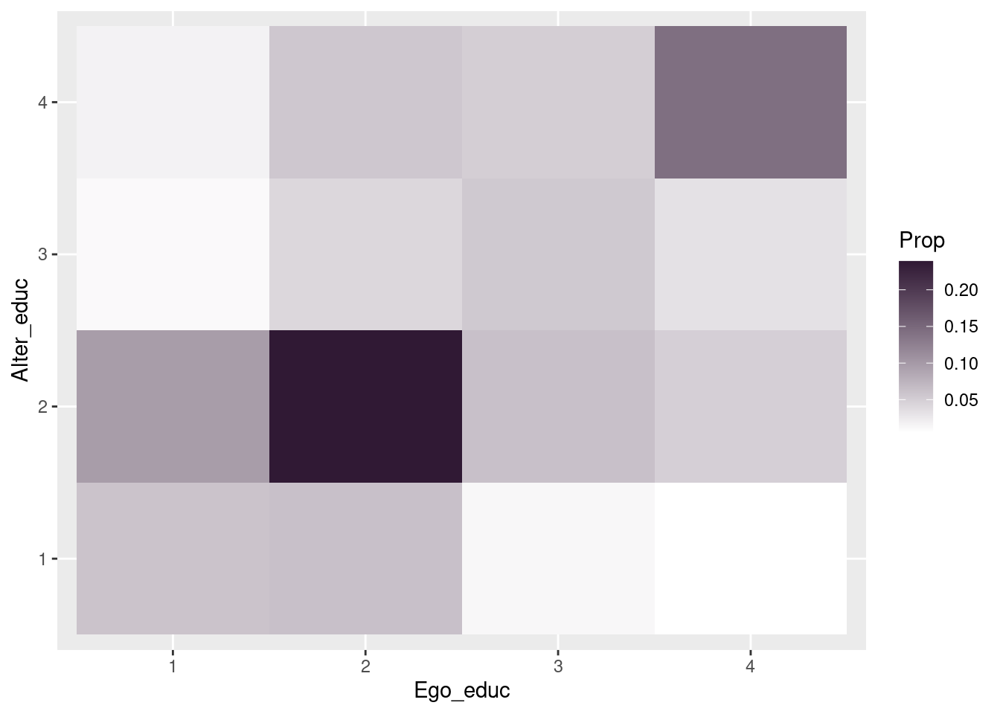